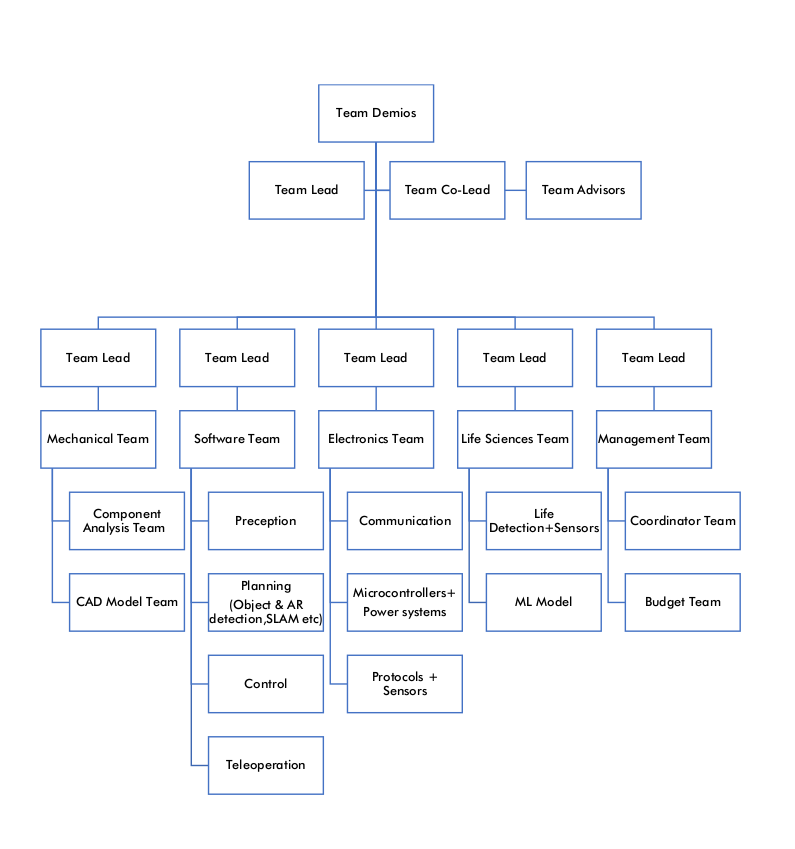

URC and IIT Mandi (Part 1)
👥Introduction
Hola Readers!
By now we all are well aware of what, why, and how ‘s’ of URC. The introduction might have raised a lot of curiosities and questions in your all-time wandering mind. So we are back again with our second blog post describing how IIT Mandi is playing its part for months.
It took months of effort, dedication, time, curiosity, enthusiasm, and zest for the team to reach where it stands today. People with expertise in various fields joined hands together to realize this long vision of IIT Mandi. So we present you the second part of this blog where you can understand how different teams are playing their role in the realization of our project. Each team has its role different from others yet they aim to combine together for the making of this project. Each team is being guided by a team leader and has also been assigned some mentors(Alumni) who give their inputs from time to time.
🏗️Team Formation
As discussed earlier the URC competition is held every year and the registrations are to be submitted with the team details by around the end of October. Now since the project was initiated in October through constant initiatives by the IIT Mandi Robotronics Club volunteers, there was not a lot of time to make the team! What began as an annual project under the Robotronics club of our college, have now taken a colossal form of a long-term project with the encouragement and help of administration and have been shifted under Science and Technology Council (SNTC) , IIT Mandi.
Soon, people with expertise from different branches and clubs were contacted for making of the team who were enthusiastic and motivated enough to realize this long-term project. Once heads and sub-teams were finalised, other people with expertise, enthusiasm and learning spirit were selected for the formation of the founding URC Team of IIT Mandi.
🏉The Team
The objective of this endeavour was to form a team not only for the current URC (University Rover Challenge) but one that would form a strong foundation for the Mars Rover as a long-term project of IIT Mandi. This required a team that not only consisted of people with expertise in their respective domains but also newbies who had the interest and aptitude to learn and would be willing to carry this project forward.
While forming the main URC Team the URC [guidelines](https://urc.marssociety.org/home/requirements-guidelines) provided a really good base for us to choose our members and decide what skills would be necessary for them to have or to learn and develop.
🪛Mechanical Team
The mechanical team is responsible for the mechanical aspects of the rover. This includes the design of the main body of the rover, suspension system, the robotic arm, wheels and the different attachment modules that are needed to perform the assigned rover tasks. Familiarity with CAD software and a good hold over vehicle mechanics is a must for this team.
🖥️Software Team
The software team is responsible for designing the internal algorithms(SLAM) of the rover. Every aspect of the rover’s design simulation, teleoperation of the rover and the robotic arm, Graphical user interface for rover control, and inter-component communication is being led by the software team.
💡Electronics Team
The electronics team is responsible for the building and setup of the electrical components. The tasks of this team include managing electrical circuits, managing the power distribution system, working on the communication module and designing the motor control system.
🌷Lifescience Team
The URC competition has a separate module that requires the detection of life on the red planet using tests and equipment present on the rover. The life science team is responsible for deciding and building the modules for the rover that would permit the rover to perform onboard tests to detect the presence of life in the surroundings.
📊Management Team
With a project involving more than thirty people divided into four main technical teams, it was our utmost necessity to assemble a few folks who would be required to handle the surge, excitement, thrill, and sail the team through rough and tough times of the project. Not just this, they also are responsible for handling the budget, organizing long-but-interesting meetings, planning timelines, documentation, making numerous calls to faculties, students, volunteers, and laboratory assistants to make sure that the team is functioning to its full potential.Team Structure
Now we knew what all teams would be needed and what would be their general responsibilities so the time comes to chose the people who will lead the charge! Each team has their own leads with full responsibility and control over how its team functions and the whole Team Deimos is led by a single project lead.
In the next part of this blog, we would be elaborating on the workings, structure, members and personalities of each team in detail. For now, you can refer to the below graphical representation of the team structure.
🖊️Ending Note
This post will have to end here😁 from the next part we will be sharing some reading material together with the blogs, the material would be related to the team we cover and is intended to help anyone who is interested and wants to explore this amazing project. So stay tuned!